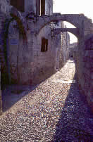
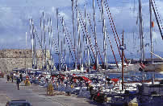

|
|
You
will
find here a description of our favourite theme-based
itineraries. A word of warning: the heat is stifling
on Rhodes during the summer, so you would be better
off doing your visits in the
morning or afternoon.
If you fancy making up your own
itineraries, use the interactive map!
Rhodes town is divided into two parts:
the city of the knights, or the old part of town,
and the new town built beyond the medieval ramparts.
1) During the
era of the knights
Departure: the
Pyli Agias Aikaterinis - Arrival: Palace of the Grand Masters
|
| |
After the Byzantine era up until 1309, the
island was conquered by the
hospitallers of St. John of Jerusalem. The
order was founded in the 11th century and took
part in its first crusade before seeking refuge
in Cyprus following the fall of Jerusalem in
1291. They bought the island of Rhodes from
a Genoan pirate a few years later. The
knights can be credited with the fortification of Rhodes
and the construction of the Palace of the Grand Masters,
which is considered a remarkable achievement of
medieval military architecture! |
|
Check out the
medieval fountain in the Ippokratous central square before going to
the street of the knights (Odos Ippoton). You will come
across the seven gothic inns of the order of
St. John built in the 14th century. The town was actually
governed by a representative elected to manage the seven 'nationalities' dividing
up the island: France, Italy, England, Germany, Provence, Spain
and Auvergne. Each nationality can be recognised by the
badge affixed to the front of the building. |
|
|
|
At the end of the street, you will find
the Palace of the Grand Masters, where you can start
your visits of the ramparts. Watch out, though, as only a few
meters are open to the public from the
Gate of Amboise to the Gate of Koskinou. Even so, it
will be ample for you to take some excellent shots of the
old part of town and its easily distinguishable districts. The
imposing wall was built on top of
the ancient ruins of Rhodes by the Knights for
the purpose of reinforcing the island's defences against any
invasions by the Turks. |
|
First
of all, we would advise you to visit the fort.
Make sure that you do not miss out on the Medusa hall, the central court
and the Hellenistic mosaics in the hall of the nine muses.
Two exhibitions are on show within the
walls
of the palace: the first is devoted to
Antique Rhodes, which brings together an impressive collection from various archaeological digs,
and the second focuses on Medieval Rhodes, taking
you back to what everyday life was like during
the Middle Ages. |
|
 |
You can finish off this itinerary in and around Epicharmou street,
which is a charming mixture
of medieval alleys and Byzantine architecture. If you still have
not had your fill, stop off at
Our Lady of the Victory and stroll around the streets with their
flying-buttresses. You are likely to come across the other
leftovers from the Middle Ages scattered around here
and there, such as the medieval fountain. |
2)
Turkish Walk
Departure: Murad Reis - Arrival: Ibrahim Pacha
|
| Our second walks focuses on the Ottoman
architecture. There are 14 mosques on Rhodes, including
the mosque of Soliman the Magnificent, which was
built in 1523 to mark the Sultan's victory over the
island. This particular mosque is unfortunately not open to the public,
because it has been undergoing restoration work over
the past few years. |
|
 |
We would advise you to set out from
the Murad Reis mosque in the new part of town. It
can easily be spotted by its minaret and
even has a Turkish cemetery, which is where Mourad-Reis was
buried, the commanding pirate of Soliman's fleet.
Then take in the Mustafa, Rejep
Pacha and Ibrahim Pacha mosques, which were built in
1531 and the interior of which is simply amazing! |
End your walk at the Byzantine museum
built within a church during the 11th century, which became the cathedral
of the knights before it was subsequently used as
a mosque. It houses an excellent collection of icons and frescos.
3) The new
part of town (nea chora)
|
The new part of town does not really hold
a lot of tourist attractions. We would
suggest that you do a bit of shopping at the market (nea agora),
whilst taking in the locals' daily way of life,
and setting out for the port of Mandraki, which is
were the famous Colossus is supposed to have been built. The 32-meter high
bronze statue was created in 305 BC according to the plans
of Chares of Lindos to mark the victory of Rhodes' inhabitants over
the King of Macedonia, Demetrios Poliorcete. The Colossus took 12 years
to build, but was destroyed by an earthquake and
the rubble was sold a few centuries later to a Jewish merchant
from Ephesus. The Colossus is traditionally represented as standing across
the port of Mandraki, but it appears that
the statue was actually built at the current site of the
Palace of the Grand Masters.
| The doe,
the symbol of Rhodes town, and the stag both guard the entrance
to the port when the Colossus was allegedly built. At the
end of the pier, the St Nicholas fort defended the town
against the initial assaults and now serves as a lighthouse. |
|
 |
The pleasure port of Mandraki
stands at the junction between the old and new parts
of town and was formerly used by the knights
to moor their galleys.
You can set out
from this port on an excursion to one of the
neighbouring islands or even Turkey. |
| The market is extremely lively
and gives an interesting glimpse into Rhodian culture. It is also
the ideal opportunity to try out a few specialities and
stock up on some fruit for your journey! |
|
 |
The three
windmills at Mandraki were formerly used to grind the grain
for the ships' cargoes. The sails still turn
with the wind today, but otherwise they are no longer used. |
4) Other
interesting sights
|
The
Hellenistic City
To get to Mount Smith, hire
out a bike in Rhodes town or take the bus. That way, you
will be able to travel the 3 km to Rodini park, which
used to be the site of the School of Rhetoric.
The Hellenistic city
comprises the ruins of
the Apollo temple, destroyed by an earthquake, the stadium and
the theatre, the last two of which have both been restored. Rodini
park with all its cypress trees and plane trees will let you
take shelter from the sun. A Doric necropolis is only
a few meters away.
The Jewish
district
Even if you have not got much time, it would be
a shame to miss the former Jewish district. Head along Aristotelous street and then go
to the Martyrs square, which owes its name to
the deportation of Jewish residents during the Second World War. One street
further on and you will come across the synagogue. The Jewish
district does not have a lot of tourist attractions, but it
is an extremely peaceful area for a pleasant stroll.
|